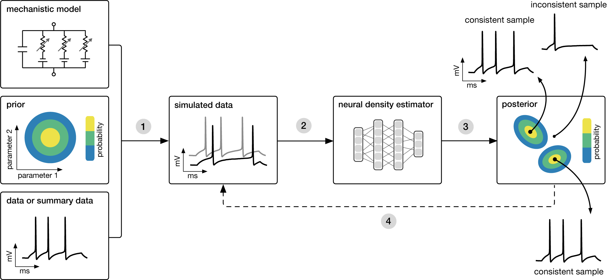

delfi¶
delfi is a Python toolbox for density estimation likelihood-free inference. It provides several algorithms for sequential neural posterior estimation (SNPE).
If you want to get started quickly, refer to the installation instructions and tutorials. To learn more about the general motivation behind likelihood-free inference, and algorithms included in delfi, keep on reading.
Motivation and approach¶
Many areas of science and engineering make extensive use of complex, stochastic, numerical simulations to describe the structure and dynamics of the processes being investigated. A key challenge in simulation-based science is linking simulation models to empirical data: Bayesian inference provides a general and powerful framework for identifying the set of parameters which are consistent both with empirical data and prior knowledge.
One of the key quantities required for statistical inference, the likelihood of observed data given parameters, \(\mathcal{L}(\theta) = p(x_o|\theta)\), is typically intractable for simulation-based models, rendering conventional statistical approaches inapplicable.
Sequential Neural Posterior Estimation (SNPE) is a powerful machine-learning technique to address this problem.

Goal: Algorithmically identify mechanistic models which are consistent with data.
SNPE takes three inputs: A candidate mechanistic model, prior knowledge or constraints on model parameters, and data (or summary statistics). SNPE proceeds by:
- sampling parameters from the prior and simulating synthetic datasets from these parameters, and
- using a deep density estimation neural network to learn the (probabilistic) association between data (or data features) and underlying parameters, i.e. to learn statistical inference from simulated data.
- This density estimation network is then applied to empirical data to derive the full space of parameters consistent with the data and the prior, i.e. the posterior distribution. High posterior probability is assigned to parameters which are consistent with both the data and the prior, low probability to inconsistent parameters.
- If needed, an initial estimate of the posterior can be used to adaptively generate additional informative simulations.
Publications¶
Algorithms included in delfi were published in the following papers, which provide additional information:
-
Fast ε-free Inference of Simulation Models with Bayesian Conditional Density Estimation
by Papamakarios and Murray (NeurIPS 2016),
[PDF] [BibTeX] (SNPE-A) -
Flexible statistical inference for mechanistic models of neural dynamics
by Lueckmann, Goncalves, Bassetto, Öcal, Nonnenmacher and Macke (NeurIPS 2017),
[PDF] [BibTeX] (SNPE-B) -
Automatic posterior transformation for likelihood-free inference
by Greenberg, Nonnenmacher & Macke (ICML 2019),
[PDF] [BibTeX] (SNPE-C or APT)
Alternatives¶
As an alternative to directly estimating the posterior on parameters given data, it is also possible to estimate the likelihood of data given parameters, and then subsequently draw posterior samples using MCMC. Sequential Neural Likelihood (Papamakarios, Sterratt & Murray, 2018) is a powerful technique employing this strategy. Depending on the problem, SNL can be more or less effective than SNPE techniques such as APT. Code for SNL is available from the original repository or as a python 3 package.